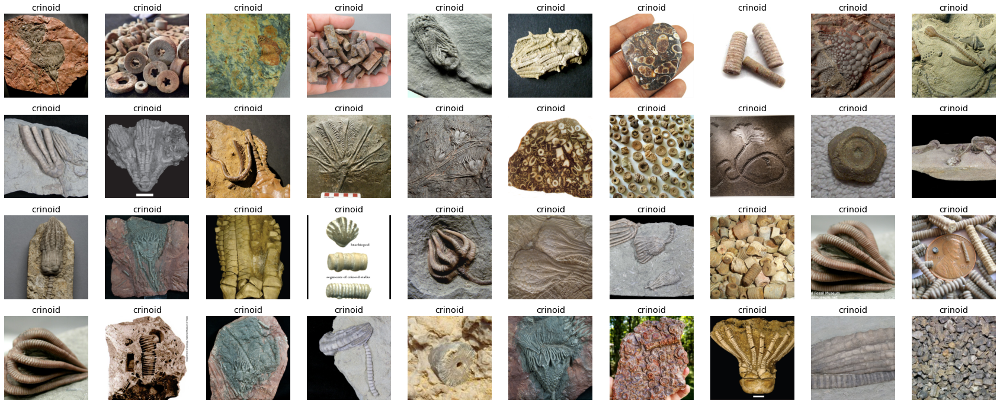
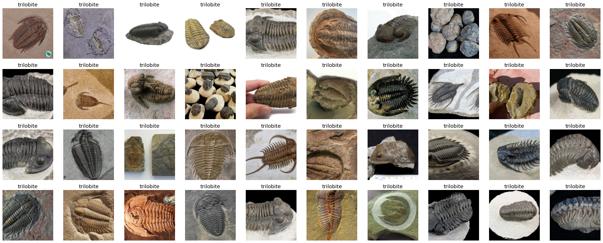
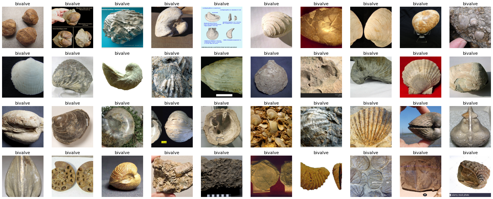
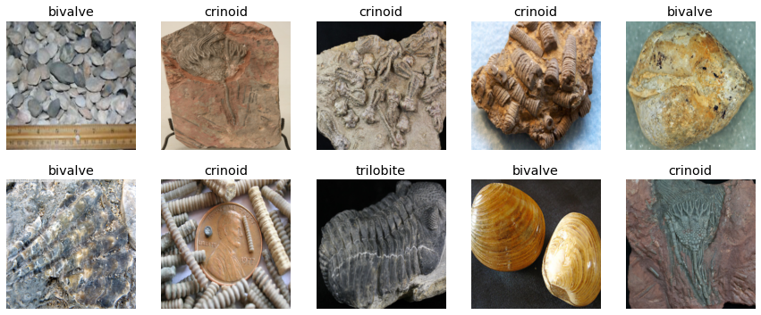
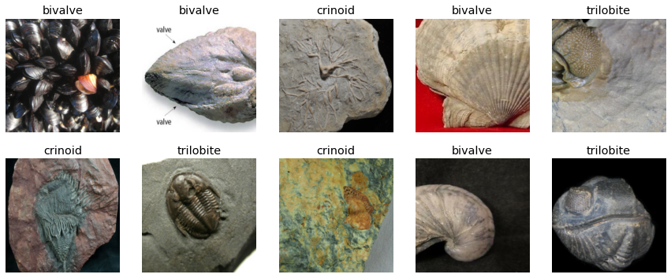
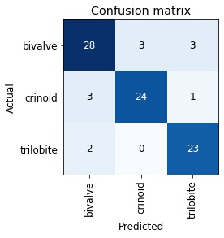
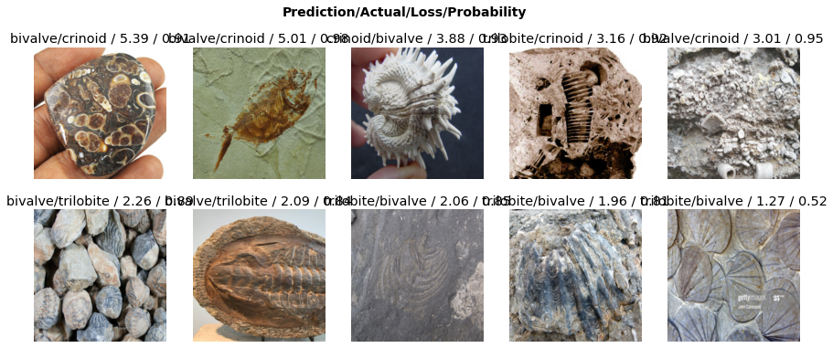

import fastbook
fastbook.setup_book()Production from Scratch - fastai Lesson 3
fossils
jupyter
A notebook that follows 02_produciton.ipynb but for fossils
Retrieve files of our subject from bing image search. The images we search for are downloaded locally.
key = os.environ.get('AZURE_SEARCH_KEY', 'xyz')results = search_images_bing(key, 'trilobite')
ims = results.attrgot('content_url')
len(ims)150fossil_types = 'trilobite', 'crinoid', 'bivalve'
path = Path('critters')for o in fossil_types:
dest = (path/o)
if not dest.exists():
dest.mkdir(exist_ok=True)
results = search_images_bing(key, f'{o} fossil')
download_images(dest, urls=results.attrgot('content_url'))Some post processing cleanup might be required to remove empty files, html data, or files that are encoded in a format that PIL cannot understand (such as VP8). They might say they are ‘.jpg’ files, but that does NOT mean that they are!
fastai has a handy get_image_files() function that will recursively identify images and return them as a list and a verify_images() which returns a list of images that are not up to snuff. Then, we use L.map() to unlink (remove) any files in the failed images list.
fns = get_image_files(path)
fns(#437) [Path('critters/trilobite/00000001.jpg'),Path('critters/trilobite/00000000.jpg'),Path('critters/trilobite/00000004.jpg'),Path('critters/trilobite/00000005.jpg'),Path('critters/trilobite/00000002.jpg'),Path('critters/trilobite/00000007.jpg'),Path('critters/trilobite/00000006.jpg'),Path('critters/trilobite/00000013.jpg'),Path('critters/trilobite/00000008.jpg'),Path('critters/trilobite/00000011.jpg')...]failed = verify_images(fns)
failed(#0) []failed.map(Path.unlink);Time to take a look at the images we’ve downloaded. fastai has a handy show_batch() function for its ImageDataLoaders objects so we can get a preview of the images inside jupyter. We must specify item_tfms= or else the widget will not be able to render the wide variety of image resolutions that have been downloaded.
dls = ImageDataLoaders.from_folder(path/'crinoid', valid_pct=0.2, item_tfms=Resize(256))
dls.valid_ds.items[:3][Path('critters/crinoid/00000087.jpg'),
Path('critters/crinoid/00000065.jpg'),
Path('critters/crinoid/00000045.jpg')]dls.show_batch(max_n=40, nrows=4)
dls = ImageDataLoaders.from_folder(path/'trilobite', valid_pct=0.2, item_tfms=Resize(256))
dls.show_batch(max_n=40, nrows=4)
dls = ImageDataLoaders.from_folder(path/'bivalve', valid_pct=0.2, item_tfms=Resize(256))
dls.show_batch(max_n=40, nrows=4)
We are now ready to create a DataBlock. The DataBlock will contain our images and labels; it will need to know how to ‘find’ the items, how to separate them into a training set and a validation set, where to get the dependent variable from (the label, e.g. the directory they are in), and last how to transform the image so that we can run CUDA on it.
critters = DataBlock(
blocks=(ImageBlock, CategoryBlock),
get_items=get_image_files,
splitter=RandomSplitter(valid_pct=0.2, seed=42),
get_y=parent_label,
item_tfms=RandomResizedCrop(256, min_scale=0.3))The data block has not yet seen our data, so lets show it the data.
dls = critters.dataloaders(path, bs=64)dls.valid.show_batch(max_n=10, nrows=2)
dls.train.show_batch(max_n=10, nrows=2)
learn = cnn_learner(dls, resnet34, metrics=error_rate)
learn.fine_tune(3)| epoch | train_loss | valid_loss | error_rate | time |
|---|---|---|---|---|
| 0 | 1.940702 | 0.609582 | 0.244186 | 00:09 |
| epoch | train_loss | valid_loss | error_rate | time |
|---|---|---|---|---|
| 0 | 0.762174 | 0.398268 | 0.197674 | 00:12 |
| 1 | 0.567270 | 0.371190 | 0.151163 | 00:12 |
| 2 | 0.462896 | 0.349624 | 0.139535 | 00:12 |
interp = ClassificationInterpretation.from_learner(learn)
interp.plot_confusion_matrix()
interp.plot_top_losses(10, nrows=2)
cleaner = ImageClassifierCleaner(learn)
cleanerlearn.export()
#path.ls(file_exts='.pkl')p = Path()
p.ls(file_exts='.pkl')(#1) [Path('export.pkl')]I had some cleanup issues when using the ImageClassifierCleaner() class. After using the widget and then invoking the for loops to unlink and move the images, it threw an exception because filenames already existed. It appears it had problems counting the images/moving the files due to name collisions. It also wasn’t clear what to do after cleaning the dataset - simply running learn.fine_tune(1) did not work since the dataset had changed, so I reinitialized the datablock and retrained the model. This improved performance from an error rate of about 17% to about 14%.